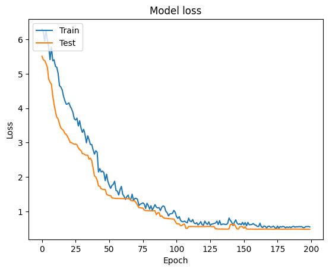
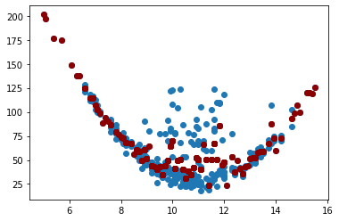
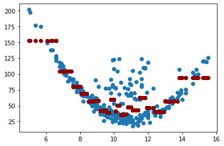
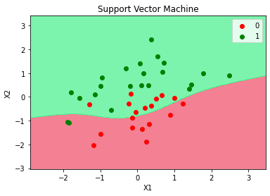
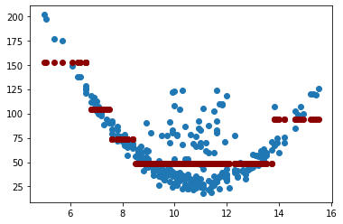
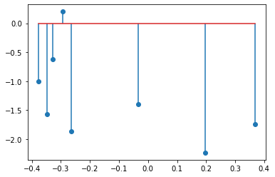

Árboles de decisión - Regresión - código¶
Importar librerías:
import pandas as pd
import numpy as np
import matplotlib.pyplot as plt
Importar datos:
df = pd.read_csv("regresion.csv", sep=";", decimal=",")
print(df.head())
X y
0 9.0 44.7
1 10.1 78.0
2 11.6 83.0
3 9.1 80.0
4 9.7 77.0
Visualización de los datos:
plt.scatter(df["X"], df["y"])
plt.xlabel("X")
plt.ylabel("y")
Text(0, 0.5, 'y')

Ajuste del modelo:
X = df[["X"]]
print(X.head())
X
0 9.0
1 10.1
2 11.6
3 9.1
4 9.7
y = df["y"]
print(y.head())
0 44.7
1 78.0
2 83.0
3 80.0
4 77.0
Name: y, dtype: float64
from sklearn.tree import DecisionTreeRegressor
tree_reg = DecisionTreeRegressor(random_state=0)
tree_reg.fit(X, y)
DecisionTreeRegressor(random_state=0)
y_pred = tree_reg.predict(X)
Evaluación del desempeño:¶
from sklearn.metrics import r2_score, mean_squared_error
r2_score(y, y_pred)
0.7064753910416934
mean_squared_error(y, y_pred)
310.4735358453583
plt.scatter(X, y)
plt.scatter(X.values, y_pred, color="darkred")
<matplotlib.collections.PathCollection at 0x1ccec1a5f70>

Aunque no se obtiene un modelo con un \(R^2\) igual a 1 o un MSE igual a 0, se puede ver en el gráfico que el modelo trata de sobreajustarse a la estructura de los datos. Con la visualización del árbol podemos concluir también que el modelo está sobreajustado.
Visualización del árbol:
from sklearn import tree
feature_names = df.columns.values[0:2]
plt.figure(figsize=(15, 10))
tree.plot_tree(tree_reg, feature_names=feature_names, filled=True);

Regularización del modelo:¶
Cambiaremos min_samples_leaf. Entre más alto el valor asignado menos
es el sobreajuste.
tree_reg = DecisionTreeRegressor(random_state=0, min_samples_leaf=10)
tree_reg.fit(X, y)
y_pred = tree_reg.predict(X)
r2_score(y, y_pred)
0.6232298523322551
mean_squared_error(y, y_pred)
398.52590337322766
plt.scatter(X, y)
plt.scatter(X.values, y_pred, color="darkred")
<matplotlib.collections.PathCollection at 0x1ccec6cfdf0>

feature_names = df.columns.values[0:2]
plt.figure(figsize=(15, 10))
tree.plot_tree(tree_reg, feature_names=feature_names, filled=True);

Cambiaremos max_depth. Entre más bajo el valor asignado menos es el
sobreajuste.
tree_reg = DecisionTreeRegressor(random_state=0, max_depth=3)
tree_reg.fit(X, y)
y_pred = tree_reg.predict(X)
r2_score(y, y_pred)
0.5953725060234119
mean_squared_error(y, y_pred)
427.991810298271
plt.scatter(X, y)
plt.scatter(X.values, y_pred, color="darkred")
<matplotlib.collections.PathCollection at 0x1ccec391340>

feature_names = df.columns.values[0:2]
plt.figure(figsize=(15, 10))
tree.plot_tree(tree_reg, feature_names=feature_names, filled=True);

Cambiaremos min_samples_leaf y max_depth.
tree_reg = DecisionTreeRegressor(random_state=0, min_samples_leaf=10, max_depth=3)
tree_reg.fit(X, y)
y_pred = tree_reg.predict(X)
r2_score(y, y_pred)
0.5667346543636781
mean_squared_error(y, y_pred)
458.2832911228835
plt.scatter(X, y)
plt.scatter(X.values, y_pred, color="darkred")
<matplotlib.collections.PathCollection at 0x1ccec2d64c0>

feature_names = df.columns.values[0:2]
plt.figure(figsize=(15, 10))
tree.plot_tree(tree_reg, feature_names=feature_names, filled=True);
